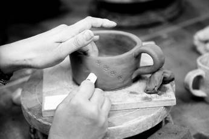

Have you ever had a piece of playdough or clay, and you felt the thrill of shaping whatever you wanted? The more your imagination stretched, the greater the creation would turn out. There were endless possibilities in your hands, and it didn’t matter that it was only playdough. Did you create a pizza? An animal? Don’t deny it—you probably tried to eat the pizza you made.
This is how we want you to view your world. You are the creator, and your world is your playdough. When you start shaping the encounters you have with people, you’ll feel the thrill that you can truly ask and receive what you desire.
Start a list. Ask. Put your hands into the playdough, and start shaping what you want. The Universe knows how to bring your matching energy to you.
When we talk about soulmates, we want to clarify what it is—even though we already have. A soul’s mate is the energy one soul is putting out to attract another that matches it. Whatever energy your soul is putting out—will show up in your world. This is you shaping what you desire, though sometimes without knowing about it.
There is always freewill for yourself and others. If you have your eye set on a certain individual, we want you to shake that off. There is more than one individual who will match your soul.
Many of you ask, is my ex the one? You look at the pros and cons of the past relationship, and you yearn for the pros, but aren’t very fond of the cons. We say this to you, if you desire your ex back, you’ll have to rematch their energy again.
If you grew from the experience with your ex, you’ll no longer be their vibrational match. It’ll feel like it keeps clashing—again and again.
Don’t get stuck on the one. Shape what you desire. Shape the energy you want in a soulmate, and be aware of the opportunities that come into your experience. They will come naturally. Your attention to the one will keep you stuck, and you won’t see the endless possibilities for other relationships around you. Your mind won’t pick up on the impulses you would have received if you’d left your options open.
When you stay stuck on an ex, it clogs up the natural flow of where your energy will take you next. It stops the creative process. Not that your ex couldn’t be the one for you, but currently they aren’t your match, so let go of the expectation that they’ll come back, or somehow, it’ll work out. If it’s supposed to work out—it will.
There is no use worrying if they are the one or not, because there are lots of soulmates for you. You don’t need to fret. If you have a pattern of thought, concerning your ex, it’s time to break free of it. Start looking at what you want to shape in your life. Create that. Create a space inside of you for this beautiful soulmate relationship. If you desire certain things—create it inside of you first—and it will naturally formulate on the outside too.
You’ll start to see snatches of the energy you want in different people. Sometimes you’ll date them, sometimes you won’t. Other times you’ll observe the possibility in the form of a beautiful relationship around you. Revel in that. Look at it, and affirm to yourself that you are seeing what you desire. That means it’s getting closer and closer to you.
When you feel the pain of lack, turn to something that feels better. Look at your dog. Hold your cat. Wrap up in a soft blanket. Create a beautiful painting. Do something else. This will help mold your energy into what you desire. When you feel you can turn and focus on your soulmate again, start by how you want to feel.
Little by little, your energy will move forward in the desire you want. You’ll feel the shift internally, long before you see it externally. This is how the law of abundance works for you.
Remember this. You are the one with the clay. You hold the power over your reality. Repeat that to yourself daily. Hold yourself responsible for what you’ve created. Don’t beat yourself up for it, just observe the clay you shaped into a blob today. If it’s not what you want, acknowledge that you can reshape it. It’s pliable. Nothing is permanent in your realm. It’s all energy, guys. All of it.
Your attention to it is what makes it appear solid to you. The more you give it thought, feeling, and attention—the more the molding takes shape. You’ll start to think the creation you created is in stone, but it really isn’t. It’s all clay. All of it.
Shape what you want, lovelies.